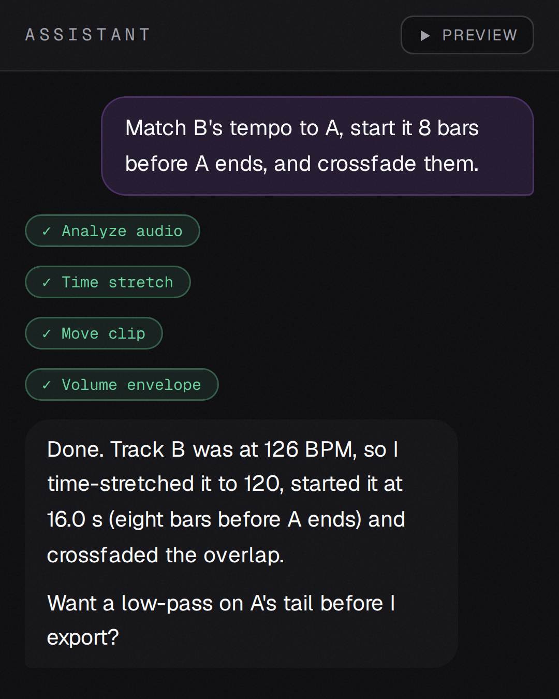

An audio editor you talk to.
Describe the edit in plain English. An AI agent turns it into calls to audio tools.
Free, MIT
macOS · Windows · Linux

The real app's chat, with a scripted example conversation